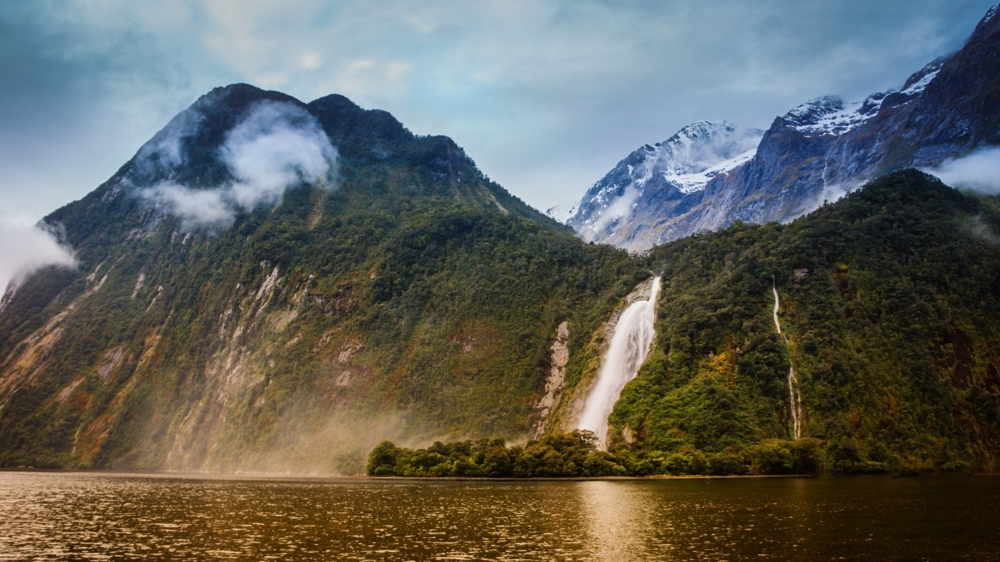

Fiordland National Park
Overview and Significance
The Fiordland National Park, situated in the southwest corner of New Zealand's South Island, is a place of truly epic scale and beauty. Spanning over 1.2 million hectares, it is **the largest national park in Aotearoa (New Zealand)**. Its immense landscapes were sculpted over millions of years by glacial activity, creating a region of unparalleled natural grandeur.
Established as a National Park in 1952, its global significance was recognized in 1986 when it was declared a **UNESCO World Heritage Area** as part of Te Wāhipounamu – South West New Zealand. This status highlights its outstanding universal value, particularly for its geological features and unique biodiversity.
Geology and Famous Fiords
Fiordland is best known for its deep, narrow fiords, which are long, narrow, deep inlets of the sea between high, steep-sided cliffs formed by glaciers. Unlike typical fjords found elsewhere, Fiordland's unique geology means many of its fiords boast a freshwater layer sitting atop saltwater, leading to distinct ecosystems:
- Milford Sound: Arguably the most famous, often described as the "Eighth Wonder of the World." It's characterized by sheer cliffs, cascading waterfalls (like Stirling Falls and Bowen Falls), and the iconic Mitre Peak. Despite its name, Milford Sound is technically a fiord.
- Doubtful Sound: Larger and deeper than Milford, Doubtful Sound offers a more tranquil and remote experience. Its vastness and numerous arms create a sense of profound wilderness, often visited via multi-day cruises.
The dramatic landscape includes towering mountains, ancient rainforests clinging to sheer rock faces, and pristine lakes such as Lake Te Anau and Lake Manapouri.
Untouched Wilderness and Biodiversity
A significant portion of Fiordland's vast land remains largely untouched by human activity, ensuring the preservation of its primeval forests and unique ecosystems. This remoteness provides a critical sanctuary for many of New Zealand's rarest and most endangered native species, some of which are found nowhere else on Earth. The park is a stronghold for various flightless birds, unique insects, and ancient flora.
Visitor Experience and Activities
Fiordland offers an array of experiences for adventurers and nature lovers:
- Cruises: Explore Milford and Doubtful Sounds by boat for breathtaking views of waterfalls, wildlife (seals, dolphins, penguins), and the sheer scale of the fiords.
- Hiking (Tramping): Home to several of New Zealand's Great Walks, including the famous Milford Track, Routeburn Track (partially), and Kepler Track. These multi-day hikes offer unparalleled immersion in the wilderness.
- Kayaking: Paddle through the serene waters of the fiords for an intimate perspective of the landscape.
- Scenic Flights:Experience the grandeur of Fiordland from above, with stunning aerial views of mountains, fiords, and glaciers.
The park is a testament to New Zealand's commitment to conservation, inviting visitors to experience its raw, untamed beauty while supporting its preservation for future generations.